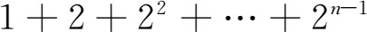
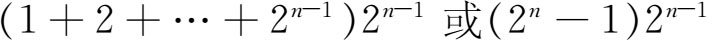

7．第七、八、九篇：数论
第七、八、九篇讲述数论，即讲述关于整数和整数之比的性质。这三篇是《原本》中纯粹讨论算术的唯一篇章。在这里欧几里得把数看成线段，把两数乘积看成矩形，但其论证并不依赖于几何。定理的陈述和证明都用文字，与现今用记号形式表示不同。
许多定义和定理，特别是关于比例的那些，重复了第五篇中的内容。因此数学史家考虑了这样的问题：为什么欧几里得要把关于数的命题都重新证一遍，而不让读者参阅第五篇中所已证明了的那些命题。
答案因人而异。亚里士多德确曾把数列为量之一，但他又强调离散量与连续量之间的鸿沟，所以我们不知道欧几里得在这个问题上有没有受亚里士多德两种观点之一的影响。我们也无法根据第五篇中含糊其词的定义来判断他那个量的概念是否包括整数。如果根据他单独讨论数这一事实来判断，我们可下结论说他的量并不包括数。但他之所以单独讨论数还有另一种解释，即关于数和可公度比的理论是欧多克索斯的工作出现以前就有的，而欧几里得不过是按传统方式来介绍两种独立发展的数学理论：在欧多克索斯以前的主要是毕达哥拉斯派的理论和欧多克索斯的理论。也许这又是因为他觉得，由于数论可以建立在更简单的理论基础上，所以最好是把它分开来单独处理。我们在现代的数学著述中也发现有这种做法，而且也是出于同样的原因——因为那样做简便些。欧几里得虽把数和量分开来讨论，但他确有几个把它们联系在一起的定理。例如第十篇命题5说可公度量之比为一数与一数之比。
也如在其他各篇中一样，欧几里得在这三篇中假定了他未曾明白说出的一些事实。例如他未经声明就假定若A除尽B而B除尽C，则A除尽C。又，若A除尽B且除尽C，则A除尽B＋C及B-C。
定义3．一较小数为一较大数的一部分，若它能量尽较大者。［一数除尽另一数时为另一数的若干分之一。］
定义5．较大数若能为较小数量尽，则它为较小数的倍数。
定义11．质数是只能为单位［1］所量尽者。
定义12．互质之数是只能为单位所公共量尽的数。
定义13．复合数是能为［异于1的］某数所量尽者。
定义16．两数相乘得出之数称为面，其两边即相乘之两数。
定义17．三数相乘得出之数称为体，其三边即相乘之三数。
定义20．若第一数为第二数的某个倍数、某个部分或若干个部分，与第三数为第四数的某个倍数、某个部分或若干个部分者相同，则此四数成比例。
定义22．完全数等于其因数［之和］。
命题1与2给出了求两数最大公度（公因子）的步骤。欧几里得描述这个步骤的说法是：若A与B是两数且B＜A，从A减去足够多次的B一直到余数C小于B。然后再从B减去足够多次的C直到余数小于C。这样一直做下去。若A与B互质，最后余数是1。那样1就是它们最大公因数。若A与B不互质，就会在某一阶段有最后一数量尽前一个数的情况。这最后的数便是A与B的最大公因数。这种步骤现今称作欧几里得算法。
接着是关于数的一些简单定理。举例说，若a＝b/n，c＝d/n，则a±c＝（b±d）/n。有些只不过是以前对于量已经证明了的关于比例的定理而现在又对于数重新证明一次。如同，若a/b＝c/d，则（a-c）/（b-d）＝a/b。又，在定义15里定义a·b为b自身相加a次。因此欧几里得证明ab＝ba。
命题30．若两数相乘得一乘积，并有一质数量尽该乘积，则此质数也量尽两数之一。
这结果在今日数论里是基本的。现今的说法是：若一质数p整除两整数的乘积，则它至少必能整除两因子之一。
命题31．任一复合数能为某质数量尽。
欧几里得的证明中说，若A为复合数，则依定义它必能为某数B所量尽。若B非质数从而又是个复合数，B将为C所量尽。于是C能量尽A。若C非质数，则照此类推下去。于是他说：“若继续这样推究，就会得出一个能量尽其前面一数的质数，而此质数也量尽A。如果不能得出这样一个质数，那就会有无穷多的一系列愈来愈小的数量尽A。这对于整数来说是不可能的。”这里他提出了［正］整数的任何集合都有最小数这一假定。
第八篇继续讲数论；那里无需新的定义。这一篇实质上是讨论几何数列的。欧几里得的几何数列是成连比例a/b＝b/c＝c/d＝d/e＝…的一组数。这连比例满足我们对几何数列的定义，因若a，b，c，d，e，…成几何数列，则任一项与次一项之比为常数。
第九篇结束对数论的讲述。其中有关于平方数和立方数、平面数和立体数的问题，还有另外一些关于连比例的定理。值得指出的是以下的命题：
命题14．若一数是能为一些质数所量尽的最小的数，则除了原来能量尽它的这些质数以外不能再为别的质数所量尽。
这命题的意思是说：若a是质数p，q，…的乘积，则a分解为质数乘积的形式是唯一的。
命题20．质数的数目比任何指定数目都要多。
换言之，质数的个数是无穷的。欧几里得对这命题的证法是经典性的。他假定只有有限个质数p1，p2，…，pn。然后他做出p1·p2·…·pn＋1，并论证这新的数是个质数，从而引出矛盾，因为这质数大于所设n个质数中的任何一个，这就有了多于n个的质数。另一方面，如果这新数是个复合数，它必能被一质数整除。但此质因数不能是p1，p2，…，或pn，因为新复合数被这些质数除会有余数1。于是就必然又有另一个质数；我们又引出了与所设只有n个质数相矛盾的结果。
第九篇的命题35给出了对几何数列之和的一个漂亮的证明。命题36给出了关于完全数的一个著名定理，即若几何级数（从1开始的）一些项之和

是质数，那么这个和同最末一项的乘积是完全数，就是说

是完全数。头四个完全数6，28，496和8128，也许还有第五个完全数是希腊人已经知道了的。